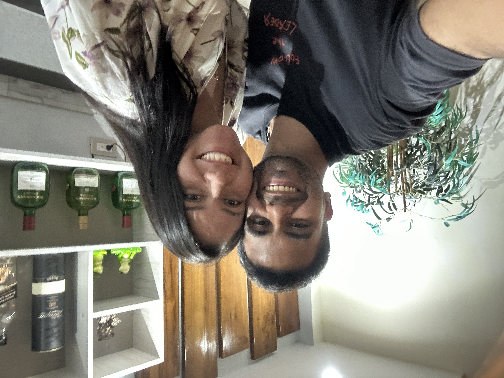
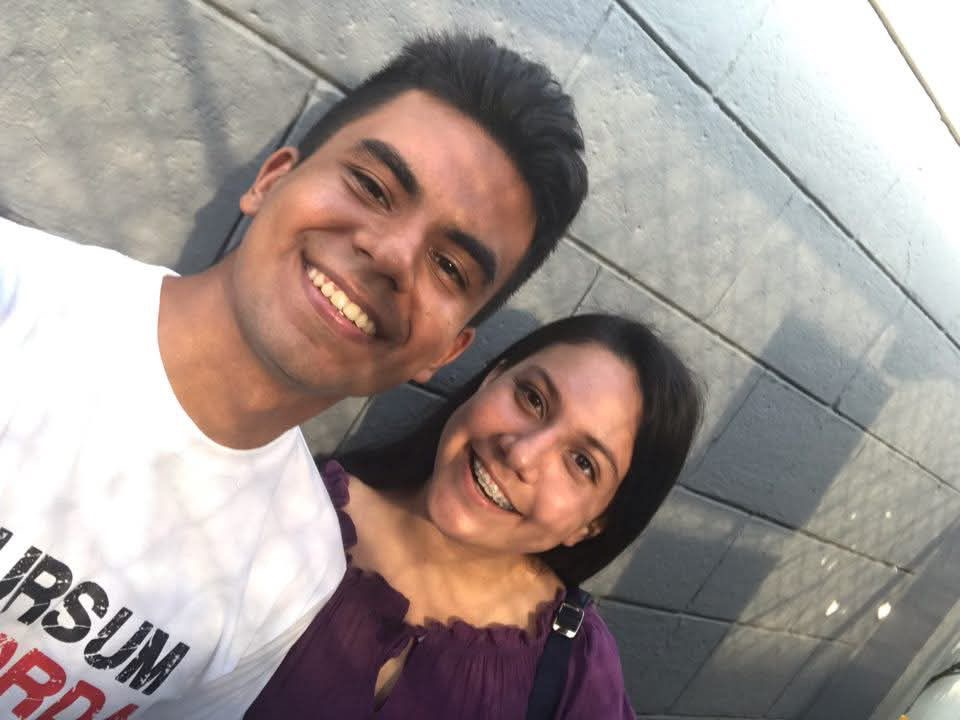
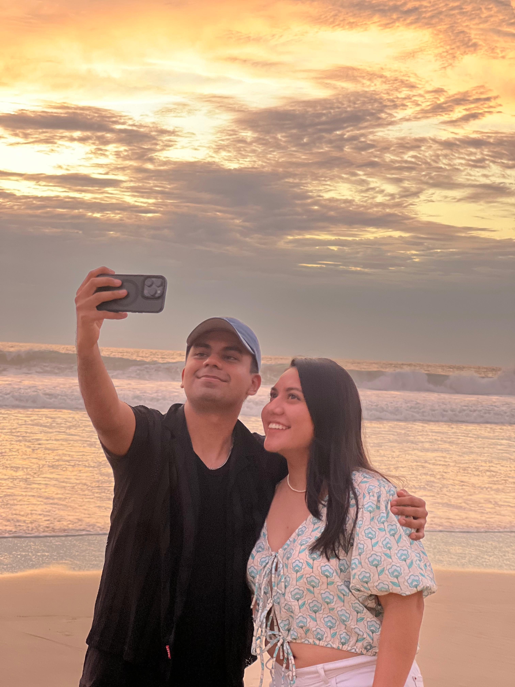
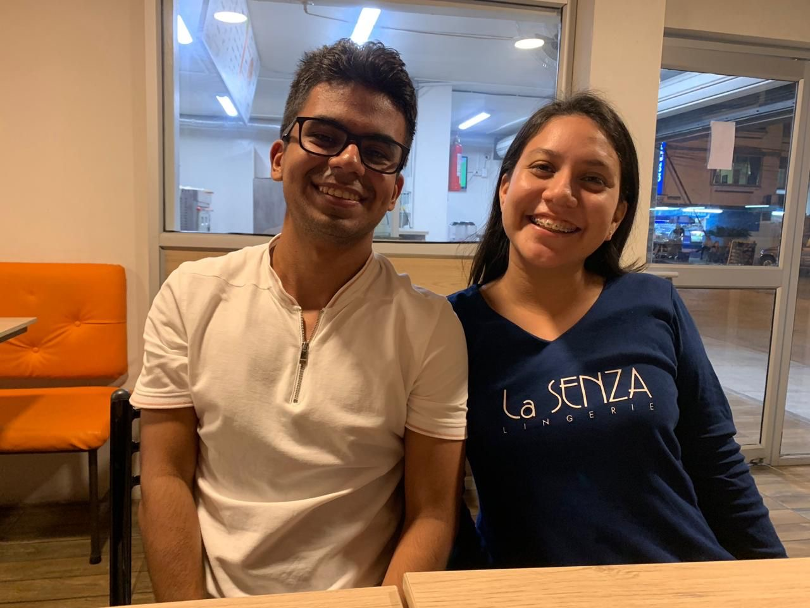
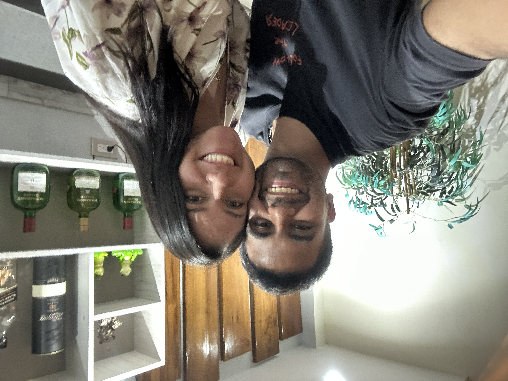
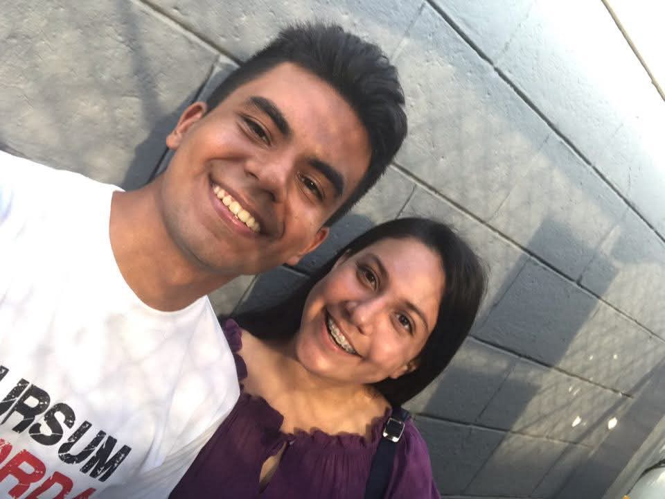
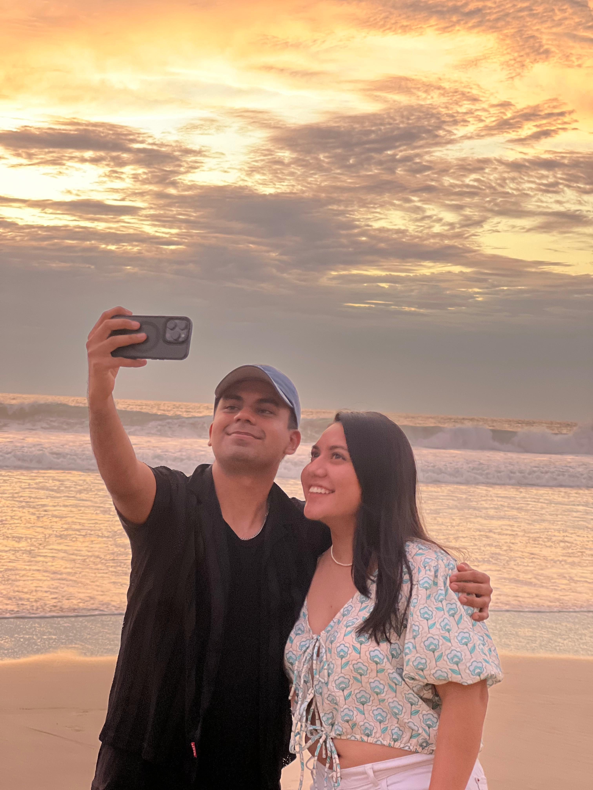
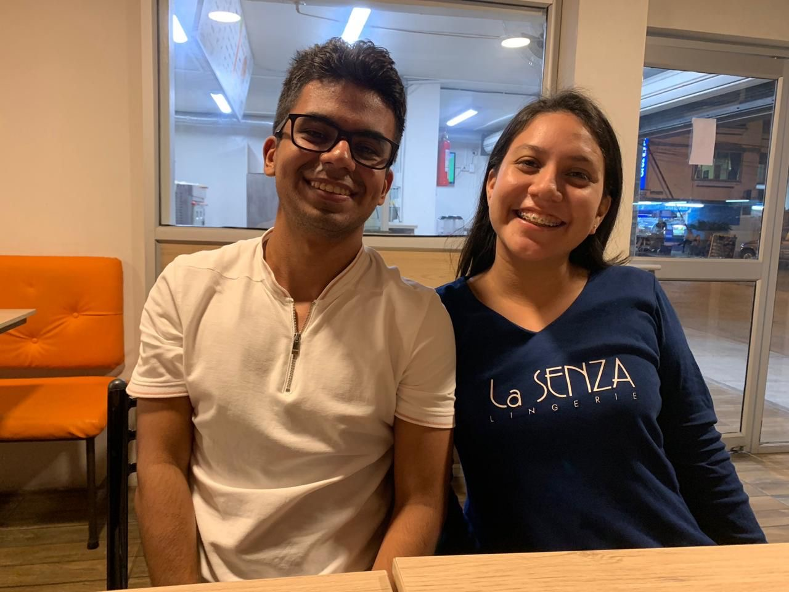

🤍 MI BAILE INoLVIDABLE 🌻
Escúchame 👂
 









Feliz San Valentín.
Te conozco desde chamaquita por puro regalo de Dios. Es chistoso pensar que un Samsung viejo me ayudó a acercarme a una tal Denisse Naula.
Siempre has sido de esas personas que, a pesar de que su mundo en ciertas ocasiones se esté derrumbando, quieren levantar a los demás, y eso es lo que celebro hoy: tu amistad. Algo que encuentro muy poco últimamente son las personas que se muestran tal cual son, y tengo que confesar que me gustas tal cual eres.
Y sé que contigo puedo ser yo; no tengo que fingir, puedo usar palabras que sé que vas a entender y hacer cosas que te van a gustar. 💃😁
Creo que la amistad es eso: mostrarte tal cual eres y que el otro no quiera irse de tu lado. Y ahora que te tengo lejos físicamente, debo decir que tu me haces falta, que quiero volver a verte y, así como nos separamos, espero pronto poder bailar contigo las canciones que dejo a continuación.
Canciones por bailar
- Baile INoLVIDABLE - Bad Bunny
- Nuestro Sueño - Grupo Niche
- Torbellino de amor - Juan Carlos ALfonoso y la Dan Den
- Mi amor amor - Ray Sepulveda
- Tu me haces falta - Eddie Santiago
- Tu me quemas - Eddie Santiago
- Lluvia - Eddie Santiago
- Siempre seré - Tito Rojas
- Parte de mi vida - Bun Bun Mezclao
- Trampolin - El Gran Combo
- La magia de tus besos - Grupo Niche
- Sin ti - Antonio Cartagena
- Te Amo Te Extraño - Guayacán Orquesta
- Regresa pronto - Grupo Galé
- Fantasia Herida - Erick Franckesky
- Día y noche pienso en ti - Jerry Rivera